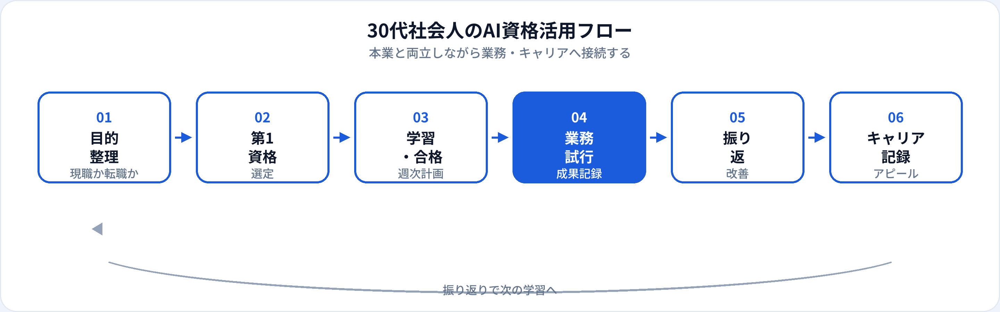

30代は、現職での業務改善と次のキャリアを同時に考える時期です。子育て・管理職候補・転職検討など、時間の使い方に制約が出やすい一方、業界・職種のドメイン知識は新卒より厚いのが強みです。本記事では、30代社会人が本業と両立しながら取るべきAI資格を整理し、取得タイミングと目的別の選び方まで2026年6月時点で解説します。3資格の横断比較は初心者向け比較記事、25〜29歳の転職タイムラインは第二新卒記事、新入社員向けは別記事を参照してください。
30代にAI資格が効く理由
30代は「AIを知っている人」から「業務で使える人」へ評価軸が移りやすい時期です。資格学習は、生成AIを試行錯誤で使う段階から、安全な運用と用語の整理へ引き上げる助けになります。
ドメイン知識との掛け算
営業・製造・金融など前職・現職の知識とAIリテラシーを組み合わせると、即戦力寄りのアピールになりやすい。資格はその土台になる。
管理職・リーダー候補の武器
チームへのAI導入・ルール整備を任される場面が増える。資格は「部下の前で説明できる」信頼の材料になる。
転職・副業の入口
書類選考の学習意欲の証明として有効。30代以降は未経験枠よりドメイン特化の求人とマッチさせる戦略が現実的。
試験対策はこちら
取得タイミングと優先順位
| 状況 | おすすめの動き | 第一候補の目安 |
|---|---|---|
| 現職でAI活用を始めたい | 業務課題1つを決め、資格学習と並行して試行 | 生成AIパスポート |
| 転職を1年以内に検討 | 第1資格→業務成果→履歴書更新の順で6か月計画 | 生成AIパスポート → G検定（志望職種次第） |
| 管理職・リーダー就任前 | 社内AIルールとチーム教育の土台として取得 | 生成AIパスポート |
| 副業・フリーランス準備 | 就規確認後、第1資格でリテラシーを可視化 | 生成AIパスポート · 副業準備記事 |
| 30代後半・キャリアの再設計 | 資格よりドメイン×AIの実績を優先。資格は補強 | 職種・業界別記事を参照 |
複数資格の同時並走は避け、最初の1つを完走してから次へ進むのが30代には特に重要です。
おすすめ資格の比較
| 資格 | 30代との相性 | 学習時間目安 | 向いている状況 |
|---|---|---|---|
| 生成AIパスポート | ◎ 本業両立に最適 | 20〜40時間 | 現職改善、管理職、転職の第一歩 |
| G検定 | ○ AI・データ職志望 | 80〜150時間 | AI業界転職、エンジニア・アナリスト志望 |
| ITパスポート | ○ IT・情シス系 | 40〜80時間 | 社内システム理解、IT職へのキャリアチェンジ |
第1候補の選び方
-
第1：生成AIパスポート（基本）
現職継続・転職準備・管理職候補の第一候補。学習負荷が低く、業務ですぐ試せる。
-
第2（転職本気派）：G検定
AIエンジニア・データサイエンティスト・アナリスト志望。生成AIパスポート合格後に着手。
-
第2（IT系）：ITパスポート
情シス・IT企画・社内DX担当など、IT基礎の整理が先に必要な場合。
| あなたの目的 | 第1候補 |
|---|---|
| 現職の業務効率化 | 生成AIパスポート |
| AI業界への転職（非エンジニア） | 生成AIパスポート → ドメイン実績 |
| AIエンジニア・DS志望 | 生成AIパスポート → G検定 → ポートフォリオ |
| 管理職・チームリード | 生成AIパスポート（管理職向け記事） |
| 副業・フリーランス | 生成AIパスポート · 詳細はフリーランス相場記事 |
30代社会人の活用フロー

30代は学習→業務試行→成果記録→振り返りのサイクルを、週次で小さく回すことが現実的です。資格は「学習」の柱、ドメイン知識は「業務試行」の強みになります。
目的別：現職・転職・副業
現職で使う
担当業務1つ（報告書、議事録、顧客メール等）に生成AIを試す。必ず人が最終確認。成果を数値化して記録。
転職を狙う
前職の強み＋AI資格＋業務改善実績の3点セットでストーリーを作る。30代は未経験枠よりドメイン特化が有効。
副業・スキルアップ
就業規則・競業避止を確認。小さな案件から実績を積む。副業準備記事と併読。
職種別の第二候補
第1資格取得後、現職の職種に合わせて深掘りできます。
| 職種の目安 | 詳細記事 |
|---|---|
| 営業 | 営業職向けAI資格 |
| 企画・経営企画 | 企画職向けAI資格 |
| マーケティング | マーケ職向けAI資格 |
| 事務・総務 | 事務職向けAI資格 |
| 人事 | 人事・総務向けAI資格 |
| 経理・財務 | 経理・財務向けAI資格 |
| サポート・CS | サポート向け · CS向け |
| 広報・PR | 広報・PR向けAI資格 |
本業と両立する学習計画
| 期間 | 週あたりの目安 | やること |
|---|---|---|
| 1〜2週目 | 5〜7時間 | 試験範囲の把握、通勤・早朝でテキスト1章 |
| 3〜4週目 | 5〜7時間 | 模擬問題、弱点章の復習 |
| 5〜6週目 | 3〜5時間 | 総仕上げ、受験。合格後すぐ業務1件に試す |
| 合格後3か月 | 業務内 | 成果を記録（時間短縮率、品質改善等）。第二候補の要否を判断 |
週末にまとめて8時間学ぶより、平日30分×5日＋週末2時間の方が継続しやすい人が多いです。詳細は生成AIパスポート勉強法を参照。
30代が押さえるべき注意点
| やるべきこと | 避けるべきこと |
|---|---|
| 目的を1つに絞る（現職改善 or 転職 or 副業） | 資格コレクター化（枚数だけ増やす） |
| 前職・現職のドメイン知識を言語化 | 未経験枠だけに応募し続ける |
| 週次で学習時間を確保（カレンダーにブロック） | 「いつか取る」を先延ばしにする |
| 社内ルール・就規を確認してから副業 | 個人AIに社外秘を入力 |
転職・昇進・副業でのアピール
転職の履歴書・面接
例：「生成AIパスポート（2026年○月）取得。前職の○○業界経験と組み合わせ、顧客提案資料の作成時間を30%短縮。」
30代は資格＋ドメイン＋成果の3点セットが説得力を生みます。書き方は記載例ガイド、転職全体像は第二新卒記事（25〜29歳）も参考に。
社内評価・昇進
資格名だけでなく、チームへの展開（ルール共有、研修参加、業務改善提案）まで話せると評価につながりやすい。詳細はキャリア活用法を参照。
副業
資格だけでは足りない点
30代の評価は業務成果・ドメイン知識・マネジメントです。資格はリテラシーと学習意欲の証明になりますが、現場での実績が決定的です。合格後は、担当業務から安全に試し、成果を記録することを優先してください。AI業界転職を本気で狙う場合は、学習ロードマップやポートフォリオも検討が必要です。
よくある質問
30代におすすめのAI資格はどれ？
現職でAIを業務活用するなら生成AIパスポートが第一候補。AI業界転職なら生成AIパスポートで土台を作り、G検定や実務スキルを追加。
本業と両立しながら取れる？
生成AIパスポートなら週5〜7時間×4〜6週間で完走できる人が多い。最初の1資格に絞り、複数の同時並走は避ける。
30代からAI業界に転職するなら何から？
生成AIパスポートで用語とリスクを整理し、前職のドメイン知識と組み合わせる。エンジニア志望ならG検定とポートフォリオ、非エンジニアならドメイン×AIの即戦力職を狙う。
資格は何枚取るべき？
第1資格を1枚完走し、業務で試して成果を記録してから第二候補を検討。30代は枚数より業務成果＋ドメイン知識のセットが評価されやすい。